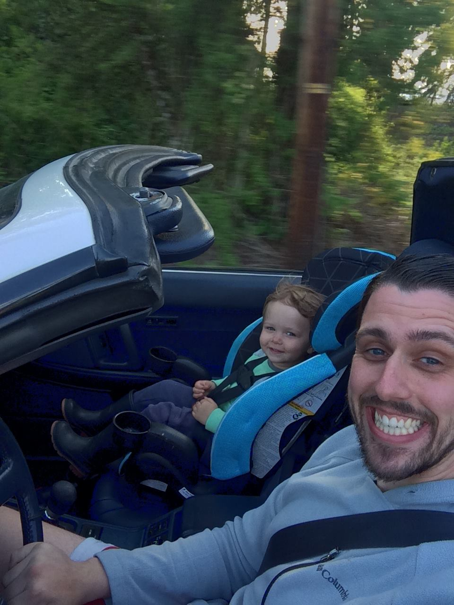

The world breaks everyone, and afterward, some are strong at the broken places. ~Earnest Hemingway
Who am I?
I am Gavin Eugene Thomas and am 24 years old. I have one amazing young boy named Alaric Eugene Thomas who is two years old. I live in Tacoma, Washington with Alaric and his mother Nichole, one day we will move out into the countryside and own
lots of animals.

Accomplishments to date
- Graduated high school with an Associates of the Arts from Pierce College.
- Graduated from University of Washington with a Bachelor in Psychology at age 20.
- Graduated from Washingtons Law Enforcement Police Academy at age 21.
- Graduated from Code Fellows 201, 301, and 401 JavaScript bootcamp in Seattle, Wa. With experience in.
- Javascript
- IOS
- Java
- C#
- Python
- Ruby on Rails
Past work experience
- Product Specialist at Toyota Marketing
- Tacoma Police Explorer Traffic Control
- Smith Brothers Farms Delivery driver
- Deputy Sheriff at Pierce County Sheriff's Department
If you would like to get to know more about me, click on any icons that you see on the side of your screen! This is just a short list of accomplishments that I have achieved. As great as any persons resume can be, it does not really describe them. I believe in finding things that inspire and motivate, to create rich and fullfilling work.